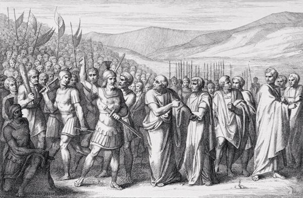

PLEBE

A plebe era a maior parte da população da Roma Antiga, representando cerca de 70% dos habitantes. Era formada por homens e mulheres livres que trabalhavam principalmente no comércio, artesanato e agricultura. Apesar de serem livres, no início não eram considerados cidadãos e não possuíam direitos políticos nem civis.
A origem da plebe é incerta, mas acredita-se que fosse composta por povos conquistados, antigos clientes e estrangeiros protegidos pelo Estado. Durante a Monarquia Romana, os plebeus pagavam impostos, serviam no exército e podiam possuir terras, porém enfrentavam desigualdade em relação aos patrícios, que concentravam o poder político e religioso.
Durante a República Romana ocorreu o Conflito das Ordens, período em que a plebe lutou por mais direitos. Entre as principais conquistas estavam a criação dos Tribunos da Plebe (494 a.C.), a Lei das Doze Tábuas (450 a.C.), que tornou as leis escritas, e a Lei Canuleia, que permitiu casamentos entre patrícios e plebeus.
Com o passar do tempo, novas leis garantiram aos plebeus acesso aos principais cargos públicos, às magistraturas e aos colégios religiosos. Em 287 a.C., a Lex Hortensia determinou que as decisões das Assembleias da Plebe (plebiscitos) tivessem força de lei para todos os cidadãos, incluindo os patrícios, marcando a conquista da igualdade política entre as duas classes.